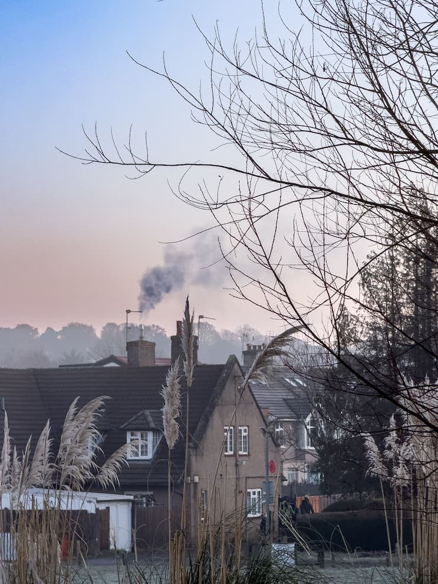

Monitoring Dublins air
Impact of air pollution in Dublin
Air pollution in Dublin has a significant impact on the health and well-being of its residents. Exposure to pollutants can lead to respiratory problems, cardiovascular diseases, and other health issues.
Health Effects
Image Source: Pexels
The health effects of air pollution are well-documented. Long-term exposure to pollutants can increase the risk of chronic diseases and reduce life expectancy.
Environmental Impact

Image Source: Pexels
Air pollution also has a detrimental effect on the environment. It can lead to acid rain, damage vegetation, and contribute to climate change.
Economic Consequences
Image Source: Pexels
The economic consequences of air pollution are significant. Healthcare costs rise due to increased illness, and productivity can be affected by poor air quality.